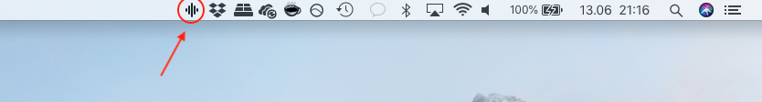
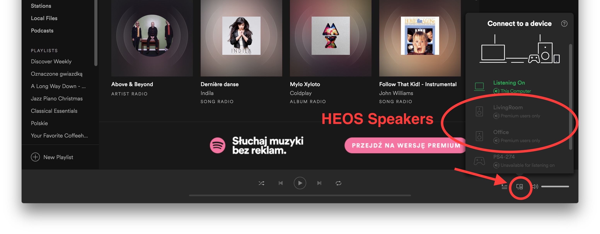
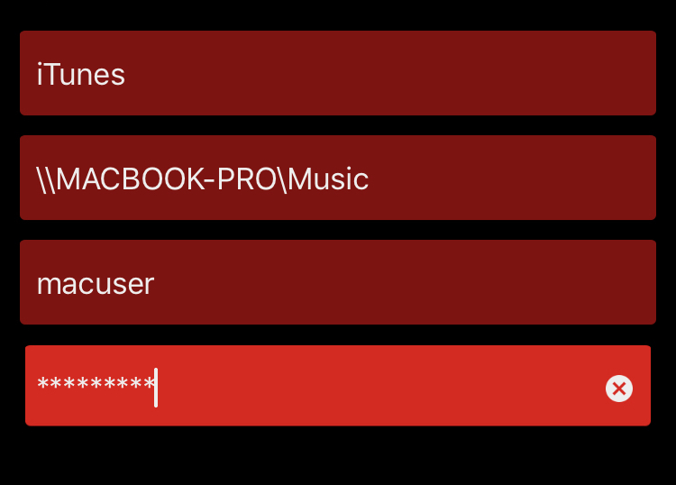

Remote for HEOS
Frequently Asked Questions
In case of any problems please check if you have the newest version.
I launched the application but it does not display any window.
Remote for HEOS does not display any window by default, but it adds an additional icon on the Mac's menu bar displayed on the top of the screen. After clicking it will display application's window.
{kind=link}
How to stream music from Spotify to HEOS on Mac?
Open Spotify application on the Mac and select one of your speakers as shown on the image below.
{kind=link}
I cannot see my HEOS favorites, why?
Open settings (small gear icon on the right bottom) and enter your HEOS account credentials. Application must be restarted after that action.
How can I group my speakers?
Click GROUP icon next to the player and select another speaker from the drop down list.
Where are custom names of my groups?
This functionality will be added soon.
Should I allow incoming connections when asked by firewall?
Yes, Remote for HEOS requires incoming connections to automatically discover your HEOS speakers and to receive updates when their state changes (like volume, playback, source).
One of my speakers state does not change in the app but it should.
Played song, volume, mute, etc. has changed but the related change is not visible in the app? Sometimes it happens and the best way to fix that is to restart affected speakers, either with Reboot speakers option or by unplugging the speaker from the power source for a few seconds.
What is the current path format for configuring Network Share?
HEOS uses Windows-style network path with backslashes like on the image below:
{kind=link}
Need help?
Send me an Email
Send me details of your issue, preferable with screenshot and any other data which can help me to deal with the problem as soon as we can.